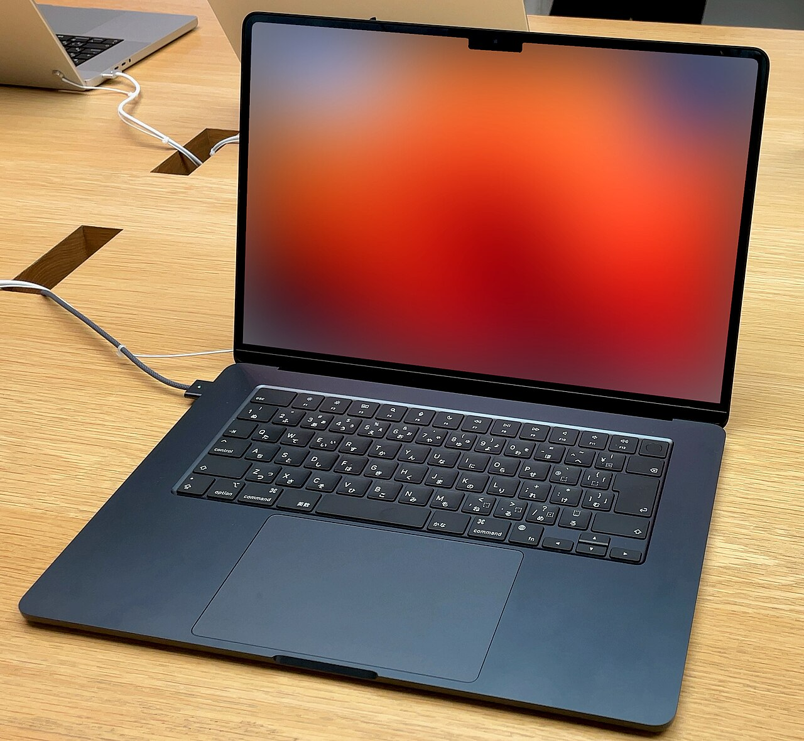

Sülearvuti ehk süler (inglise keeles laptop), kõnekeeles ka läpakas ja rüperaal, on kaasaskantav arvuti, mille suurim erinevus lauaarvutist tavakasutajale on võimalus töötada nii aku kui ka võrgutoite pealt.
Sülearvutisse on sisse ehitatud kasutajale kuvar, klaviatuur ja kursori juhtimisseade (hiir, puutepadi või puuteekraan), kõlar(id), veebikaamera, sisend-väljundpesad (USB) ning töötamiseks vajalikud arvutikomponendid. Lisaks võib olla sisse ehitatud ka optiline seade, näiteks CD/DVD-luger, sõrmejäljeluger, kaardiluger, mobiilsidevõrgu modem jpm.

Kodulehele